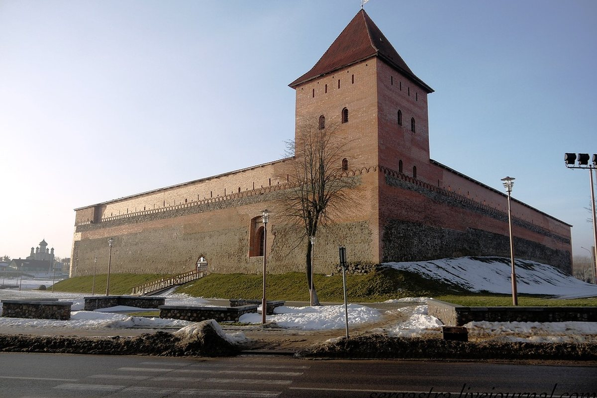
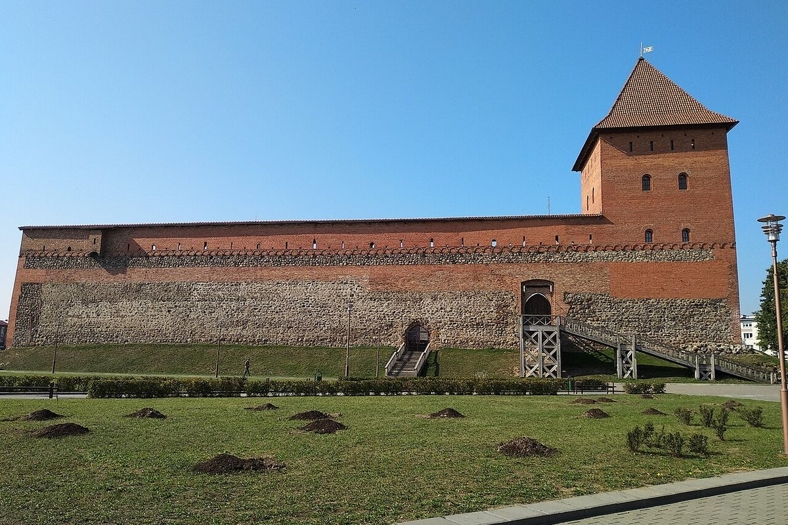

A stone castle built by order of Grand Duke Gediminas in the first half of the 14th century. Today it is a museum and one of Lida’s main sights.
The stone castle in Lida was built by order of Grand Duke Gediminas of Lithuania in the first half of the 14th century. Construction took five to seven years.
The castle was built of field stone and brick. The walls are 2 metres thick at the base and 1.5 metres at the top; the southern and eastern walls had brick embrasures. At first there was one tower; a second was built in the early 15th century.
In the 17th century the castle endured wars, and in the early 18th century the Swedes blew up both towers. In 1794 a battle of Tadeusz Kościuszko’s insurgents took place among the ruins.
In the 20th century the castle was conserved and restored. Today it belongs to the Lida Museum of History and Art; exhibitions are housed in the towers.

